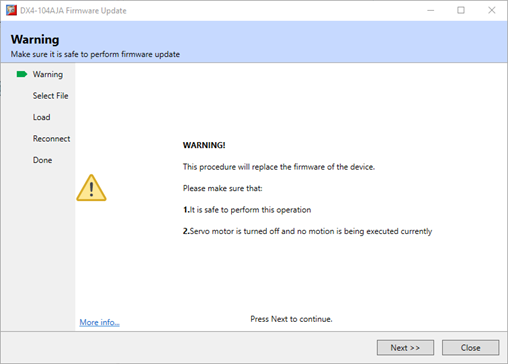
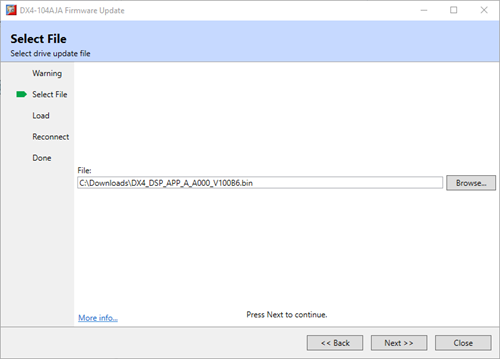
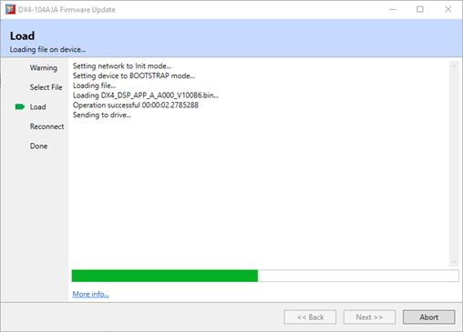
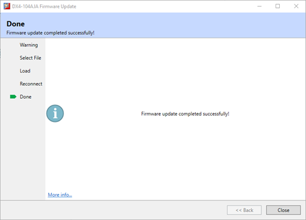

EtherCAT Device Load Firmware / Reprogram FPGA
The firmware and FPGA configuration file is field upgradable
on Trio devices. This update process is controlled via an update wizard
launced from the Drive or Device page.
Wizard sequence is:
-
Warning screen, please ensure it is safe to update
the device.

-
Select File, browse to the new firmware or FPGA
image.

-
Load and Reconnect, once the new file has been
selected it will be dowloaded to the device. All associated network state
maipluation will be handed automatically to allow the update to happen and
retun the network to an operational state.

-
Done, confimation that the update was successful.
